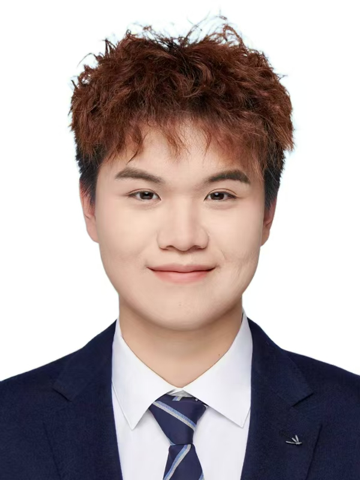

刘昊坤
LOADING SOUND… 0%
A B O U T / E X P E R I E N C E

我叫刘昊坤，武汉音乐学院电子音乐作曲专业在读研究生、游戏音频设计师，擅长声音设计、Wwise 集成与音乐创作， 能独立完成从单条音效质感到整套音频系统落地的全流程。
求职意向：游戏音频 / 声音设计 / 音乐制作（找实习）
工作地点：武汉 / 北京 / 上海 / 广州 / 深圳 / 成都 / 杭州
「新声杯」作曲比赛三等奖 · 本科优秀毕业生 · 五好学生 · 优秀共青团员 · 连续两年一等奖学金、校友奖学金（专业前10%）· 青马工程优秀学员 · 志愿服务先进个人
本科 · 优秀毕业生 · 主科 90–95 分、总均分 80+
硕士研究生在读 · 主攻声音设计与音乐创作
独立负责两个节目的原创作曲、排练监制与全程统筹
部分章节音频制作 + 6 章谱例编排，教材级交付
手游 / Mobile
英雄联盟手游·宗师 ｜ 原神·冒险等阶60 ｜ 明日方舟·120级 ｜ 明日方舟：终末地·60级 ｜ 炉石传说·狂野天梯前50 ｜ 皇室战争·14000杯
端游 / PC
三角洲行动·500+小时 ｜ 暗黑破坏神4·折磨12难度通关 ｜ 魔兽世界·1000+小时 ｜ 怀旧服·冰冠堡垒英雄难度巫妖王通关
Steam
150+款游戏：赛博朋克2077、黑神话·悟空、荒野大镖客2、双人成行、古墓丽影：崛起、生化危机8 等均已通关
深度玩家的身份，让我能站在玩家视角长期观察玩法与听觉反馈——把游戏体验直接转化为声音设计。
作品集按游戏开发流程展示
设计思路 金属碰撞、护甲摩擦、拳脚着肉，分层叠加做出「一拳打实」的重量感，配合动作节奏做音画同步。
写实拟音 / 打击分层 / 音画同步 / Foley
设计思路 在真实枪械细节之上叠加科幻能量层，做出有层次、有冲击力的射击音效。
枪械拟真 / 科幻合成层 / 动态冲击
设计思路 卡牌点击、拖动、放置都有独立反馈，音量/音色按层级区分，做到「手感扎实、反馈清晰、不抢画面」。
UI 反馈层级 / 手感打磨 / 克制与清晰
设计思路 为科幻武器制作枪械音效，为黑洞特效设计专属音层：低频振荡 + 反向滤波做出「空间被吸进去」的扭曲感。
科幻武器 / 特效拟声 / 声像与时间处理
设计思路 冰魔法技能音效链：蓄力→释放→命中→碎裂→消散五阶段独立设计，做到「一技能一段戏」。
技能音效链 / 元素质感 / 节奏曲线
设计思路 二次元风格 UI：轻快、清脆、带一点「梦幻感」，关键节点用华丽音色强化仪式感。
二次元审美 / 轻快音色 / 仪式感强化
设计思路 科技终端式 UI：主操作干脆利落，次级操作轻而克制，关键节点强化仪式感，整体干净、辨识度强。
科技终端 UI / 层级克制 / 手感反馈
设计思路 对 Unity 官方示例 3D Game Kit 做全量音频重制：设计 → 160+ 条 Wwise 映射表 → 引擎集成联调 → 2 万字技术文档 → Windows 可试玩版。
设计思路 以声音设计驱动，注重音色质感与空间层次，营造「幻听」般的沉浸听感。
合成器音色 / 空间层次
设计思路 融合多种风格元素，附作品谱例，体现编曲、配器与和声层面的完整能力。
编曲能力 / 风格融合 / 谱例实证
设计思路 面向实际应用场景的功能性音乐（游戏 / 视频 / 界面配乐），兼顾氛围与实用性。
功能性配乐 / 场景适配 / 情绪表达
独立负责两个节目的原创作曲、排练监制及全程统筹，音乐会顺利公演。
部分章节音频制作 + 6 章谱例编排（Sibelius），教材级交付并用于校内教学。
原创电子音乐作品参赛，获三等奖。
L E T ' S M A K E S O M E N O I S E